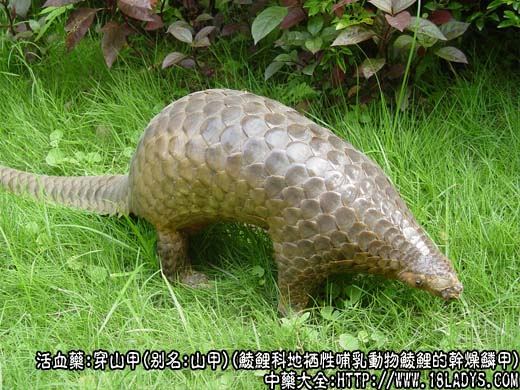
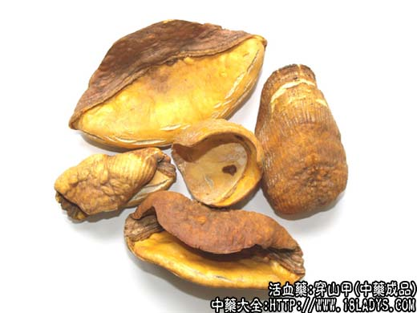
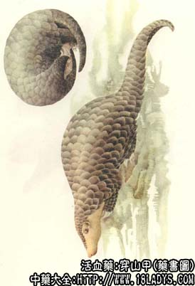

穿山甲为常用中药。始载《名医别录》，原名“鲮鲤甲”。《图经本草》称为“穿山甲”。
别名：山甲、甲片。
来源：为鲮鲤科地栖性哺乳动物鲮鲤的干燥鳞甲。生成在热带及亚热带地区，一般多栖息于山林、丘陵或灌木丛杂树林之较潮湿的地方，挖洞居住，多筑洞于泥土地带。
产地：主产于广东、广西、云南、贵州，此外，湖南、福建、台湾、浙江等地亦产。国外产于越南、缅甸、印尼等地。
性状鉴别：鳞甲因生长部位不同，形状大小也不一致，一般呈扇面形、盾形或三角形，长约1.7～4.5厘米，宽约1.9～6厘米，中央厚约1～3毫米，边缘较薄呈刃状，背面有多数纵向排列的线纹，腹面底部近缘有数条横皱纹；中部有一条孤形棱线。表面棕褐色，腹面色略浅，较光润。角质，微透明，坚韧有弹性，难折断，不带皮肉者（习称清水甲片）为佳。
功效与作用：消肿排脓，下乳通经，散瘀通络。
炮制：砂烫后醋淬。
性味：咸，微寒。
归经：入肝，胃经。
功能：消肿溃痈，通经下乳，通络散风。
主治：痈疽肿毒，乳汁不通，瘀血经闭，风寒湿痹。
临床应用：1、用于下乳，治哺乳妇乳汁分泌不足，可用炙山甲配王不留行、宣木瓜、黄芪、木通等，效果不错，方如山甲下乳汤。
2、用于治痈疽。内服以炙山甲配银花、皂角刺等煎汤治痈肿初起，促进脓肿消散，方如消疮饮（见银花项下）外用可用炙山甲末或炮山甲末和药调敷疮疡。但痈疽已溃的病例不要使用。
此外，穿山甲也可用于治高血压病，配丹参、代赭石等；治神经衰弱用炙山甲配熟枣仁。生地、磁石、阿胶等，效果较好；治癓瘕积聚用炙山甲配莪术、三棱、当归等。
用量：3～9g，不宜过服。
处方举例：山甲下乳汤：炮山甲4.5g，王不留行9g，宣木瓜9g，黄芪18g，木通8g，水煎服。
注：我国穿山甲的产量少，不能满足药用，尚有一部分进口。一般进口的穿山甲，分大、中、小三种。其中大甲片长、宽约在8厘米左右；中甲片，长、宽约在6厘米以上；中央厚约4～6毫米灰黄褐色，习称“铜甲片”；小甲片，长、宽在6厘米以下，棕褐色，习称“铁甲片”。习惯认为小甲片便于炮制，质优。